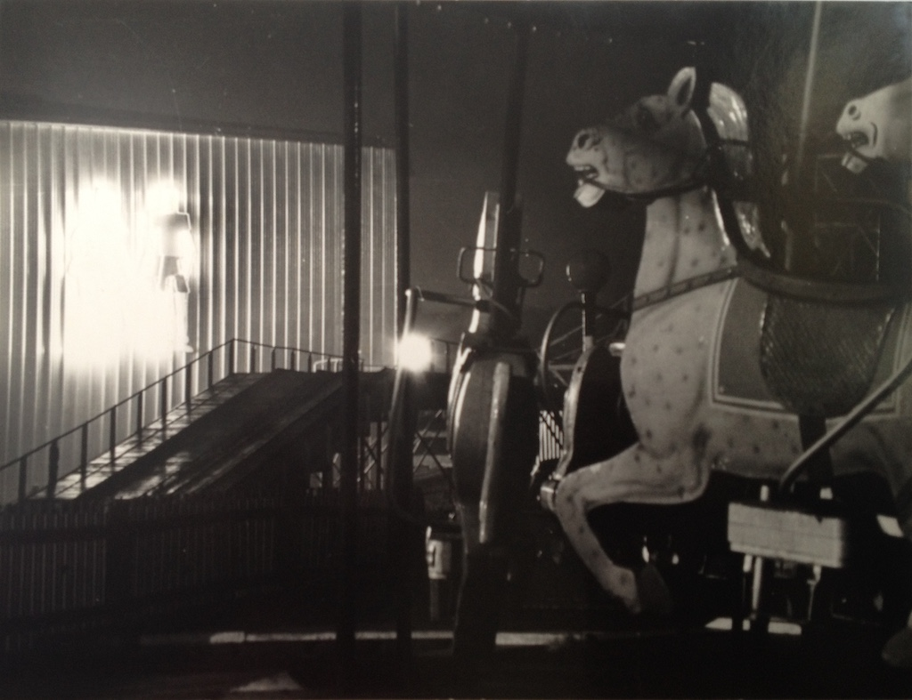
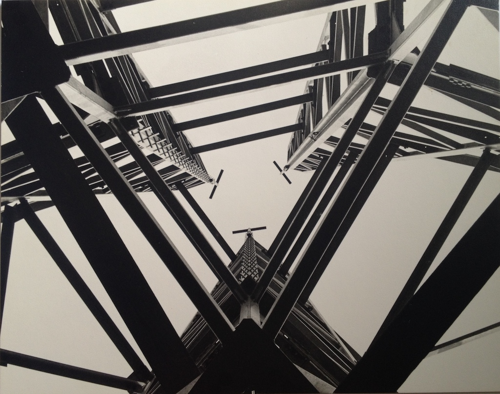

Someone must have said that learning is a lifetime activity and that has certainly been my experience. However, my early education didn't get off to a flying start. I previously mentioned my first day at school in September 1953 at the age of nearly five and a half. This event took place at Gews Corner School in Cheshunt, which is apparently now called Millbrook School. It was a Victorian school, built in 1909 and seems to look the same today.
My memory of infant school otherwise seems to be non-existent! I think that I had moved up to the junior school when we moved from Cheshunt to Edmonton in Middlesex (a county which no longer exists). We lived in a block of flats in Charlton Road, just a short walk from Cuckoo Hall Lane School. The primary school (infants and junior) is now called Woodpecker Hall Academy and the secondary school on the same site is Cuckoo Hall Academy. At that time Cuckoo Hall Lane Junior school was a 'modern', single-storey, flat roofed building with green spaces between the 'arms' of the classrooms. My early education must have made a big impression on me, since I can only remember the general appearance of the school and that, in a higher year, were a set of quins.
I must have been nine years old when we moved to Potters Bar, swapping our council flat for an end of terrace house on the 'Edmonton estate', and went to Parkfield Junior School in The Walk. My first memory is wandering alone around the playground at break, looking for a boy that I'd known in Edmonton, although I don't recall ever becoming friendly with him. Parkfield had been the 'senior' school until Mount Grace was opened and the infant school was still Ladbrooke in the High Street, but the first two years of Mount Grace were housed in huts on the Parkfield site. It seems that the school was rebuilt as an infant and junior school in 1998 and named Ladbrooke JMI School.
In a way, my time at Parkfield was quite significant in my education. In the 'third year' I was in the top class, taught by a Mr King. I think that I struggled generally, particularly with reading and spelling. After a while we were given the list of words to learn for our weekly spelling test. As a result I went from getting few right to getting them all right. However, I recall that Mr King set us 'assignments' to do at home. I had trouble with these and my parents, although they tried, couldn't help me. In the end they opted me out of doing assignments. Mr King seemed to be respected by everyone, including my parents, but he had a nasty streak. On one occasion he asked one child a question, getting them to stand up when they couldn't answer it. He then asked the same question to each of the other children who didn't do assignments, in the end having us all standing and pointing out to the class that none of us did assignments. At the end of the year he 'suggested' that I would find it easier if I went down to the next class in my fourth and final year at the school.
I certainly have better memories of my final year at Parkfield, but I can't recall any preparation towards the 11+ exam, which was used to decide whether a child went to a Grammar School or a Secondary Modern School. My only recollection is sitting in a classroom (not that of my own class) and doing some tests. The letter we received said that I had failed.
In Potters Bar, those who passed their 11+ were given the option of going to a grammar school in another town. For me that was not an option. I had a place at the local secondary school, Mount Grace. However Mount Grace was a Comprehensive School, which was a rarity in 1959. Although the first Comprehensive School was established in 1946, it wasn't until the mid-1960s that they really started to spread due to a policy decision by Tony Crosland, the Labour Government Secretary of State for Education. Comprehensive schools did not have any selection criteria, so Mount Grace was not comprehensive in its truest sense, since the 11+ exam was still taken and parents of those who passed had the option of sending their children out of the area to a Grammar School. My parents expectation was that I, like them, would leave school at 14 and get a job. The school leaving age may have been 16 by then, but you get the drift. Having a good schooling was important, but education was not a necessity.
In 1970 the Conservative Government ended the compulsion on local authorities to convert from a selective system to a non-selective system. So to this day there are still areas of the Country that have Grammar Schools.
Probably due to some of the 'brighter' children going elsewhere, I was in the second form in my first year at Mount Grace, along with some who had passed their 11+. The form that you were in was not particularly relevant, since English, Maths and Science were streamed, so you could be in the top set for one subject and the third for another and you could move sets from one year to the next. In fact I moved from the second maths set to the first as I moved into the third year.
GCE (General Certificate of Education) exam results were mediocre. English and maths were compulsory and I also took biology, physics with chemistry, geography, technical drawing and metalwork. I had taken general science GCE earlier and just managed to pass. As far as I recall, the only A grades that I managed were in technical drawing and metalwork. However, my results were enough to get me into the sixth form to study physics pure maths and engineering drawing. The latter was only a one-year course. This meant that I had more time to work on my two main subjects in the upper sixth. Although I got an A for engineering drawing, I only managed a B in physics and a C for pure maths. If I'd known better (or had been given some advice) I should have taken applied maths rather than pure, which was much more practical.
Being a prefect in the sith form, with silver braid around my green blazer, was probably the bigest influnence on my confidence as a youngster. I took part in the annual school play (I was the third tempter in Murder in the Cathedral), led our entry in the inter-house poetry choir event and generally took a more active role. I also played hockey for the school and became a member of Potters Bar Hockey Club for a while. It was also the time for applying to University. Since I had no foreign language at O-level I was limited to the number of universities to which I could apply. I can only remember trying Queen Mary College, London and Lancaster. I had offers from both and chose Lancaster since it was further away from home. Not that I had any problem with 'home', but I didn't want any reason to come home at weekends during term.
So it was that in September of 1966 I borded a train from Euston station for Morecambe and three years at the University of Lancaster. Dad drove Mum, Alan and me to Euston and went on to the platform with my cardboard suitcase and a bag with things hanging on the outside. Another family asked if their daughter could join me on the journey, so I had company for the trip.
Lancaster University was still partly in temporary accomodation in the city centre. I think that the arts faculties had taken up residence in the building site that was Bailrig, the new campus. This also meant that there were no accomodation blocks and so first year students were housed in digs, mainly in Morecambe. Being a seaside town there were pleanty of out-of-season guest houses offering bed and breakfast accomodation to holiday makers, although we were getting an evening meal as well. I had been allocated to 10 Clark Street in Morecambe, where Mrs Atkinson (always known as Mrs A) had a three-storey terraced house. I was the first of the 'freshers' to arrive and was shown into the front room (for the first and only time). Shortly afterwards the second new tenant arrive. This was Dick. It seemed that there were to be four of us, sharing two rooms, so I suggested that Dick and I shared one. After all, I didn't know what the other two would be like and it turned out to be the right decision. The two John's (one known as Paddy due to his surname of O'Sullivan) arrived later. There was also a second year student who had his own room. At the start of the second year Dick, Paddy and I moved into a basement flat. Luckily Paddy decided to move elsewhere during the year. The second and third years were spent on the new campus. I shared a study room with another physicis, John Taylor (who sadly died in 2018) and Ian Morrey, a mathematician.
During the first year at Lancaster we had to study three subject to an equal level and then dicide which to major in at the start of our second year. Since I was studying physics I had to take maths and wanted to study philosophy as my third subject. However, I was talked out of it by the head of the physics department and chose biology instead. I wish I had stuck to my guns and taken philosophy. I struggled with the maths in the first year, but managed to get through. Then I found that experimentation was my main strength. We did two major experimental projects, one during the summer vacation at the end of the second year and one in the third year. Both my project, one on high energy nuclear physics and one on material science, made my name in the department. I'm sure I only got a 2.1 because two departments wanted me to stay on to do a PhD.
As well as continuing to play hockey I was active in the photographic club and would use the physics department dark room to develop film and prints (all black and white). The photo above is of the steelwork for the Chaplaincy Centre at Bailrig, looking up from its centre. When finished it was quite a striking building and very different from the concrete blocks of the other buildings on the campus.
While living in Little Eaton, just north of Derby, and working at Rolls Royce and Associates (and probably after yet another contract had been cancelled) I decided that it might be useful to have another string to my bow. So I enrolled in a part-time course to obtain a City & Guilds Further Education Teacher's Certificate. This was at Ilkeston Further Education College, about eight miles to the east of Little Eaton. All the other students were crafts people, such as chefs, and so I did comparatively well on the essays. The course also included some teaching practice and I taught one term of a computer course. It was a case of reading a couple of chapters ahead of the class in their set book! I never actually made use of this qualification.
Later on in my career I thought about taking an MBA course. However, whenever I looked at the sylabus of a course I seemed to have covered most of the content in my working life. I then noticed an advertisement for a one-year part-time course for a Post-Graduate Diploma in Business Research at the University of Brighton. This seemed different to other courses in that it looked at how to use reseach within business organisations to help make business decisions, and it was based just down the road. After attending an 'information' meeting I decided to enrol. Apart from the research aspects of the course I felt that one of its strengths was the people attending. This ranged from a fine artist to the technical director of ITN. I was working at Eurotherm at the time and managed to get agreement to take time off for the various residential workshops. Certainly the course introduced me to a whole different way of looking at organisations, about social science research techniques and how decisions could be based on evidence rather than 'gut feel'.
At the end of the course I enrolled to study for an MA, later transferring to do a PhD. Finding a supervisor was initially tricky, since the subject that I wanted to research was not an area where there was expertise in the Business School. Initially I approached a professor at Leed University. He agreed, although I think it would have been difficult. However, he suddenly died! After exploring the possibility of one of his ex-students now at Brunel University I discovered that there was a business research group at Brighton called the Centre for Research in Innovation Management (CENTRIM) and Professor Howard Rush (an American) agreed to take me on. Learning to do case study research took quite a shift away from the scientific method with which I was comfortable, but after six years I obtained my PhD in 2001.